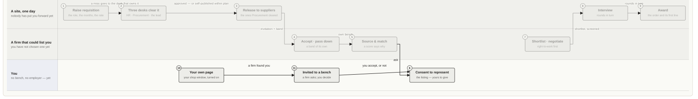
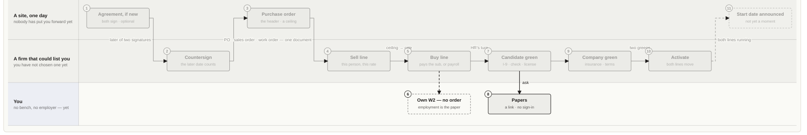
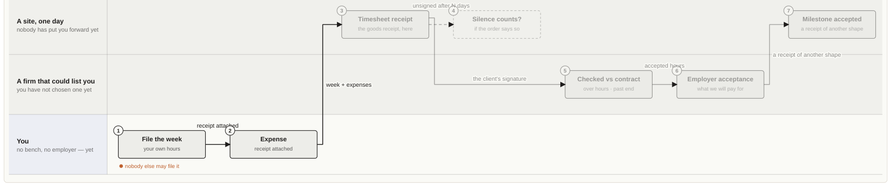
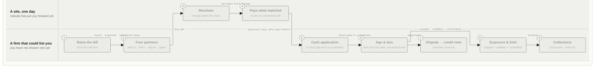
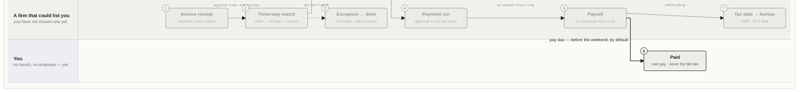
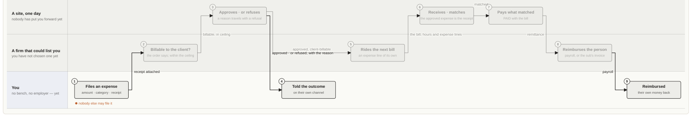
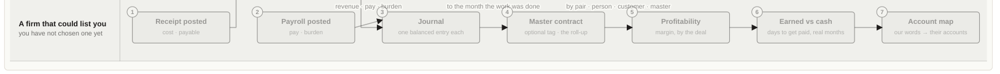
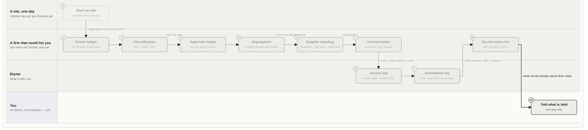

Documentation · The operating model, from one desk · 8B of 10
Candidate — independent
No bench, no employer — yet. A page of your own, and a choice to make.
Position on a deal
You are the person and nothing else — no firm holds a listing for you, no firm employs you. Etyme places nobody, so from here two things can happen and both are yours to decide: a firm invites you to its bench and you grant it a listing (you become 8A), or you incorporate and sell yourself (you become party 7). Until one of those, the streams below are not yet yours.
Desks · L1
You
This is a state, not a flow, and it is drawn to say so. What is yours here is the page — the one case where turning it on is the point, because it is your shop window — and the invitation that arrives because somebody read it. Everything from the contract onward begins the day you choose who represents you. What Etyme guarantees before that day: nobody markets you without your consent, nothing about you is public until you turn it on, and a firm that has never put you forward cannot open your file. Shaded lane — a party outside the firm. Anything crossing into it is a document a counterparty reads. Blue-edged lane — one of this party’s own desks. Its boxes are solid; everyone else’s are faded but still there, because the stream does not change — only who is looking. Labelled arrow — the artifact that moves: requisition, submission, order, timesheet receipt, bill, invoice. Dashed box — a
L1.1 · value stream · L2
Source to contract

Edge systems
SAP S/4 · purchase requisition, source list HCM · position, job requisition
Documents at the edge of this stream can come from or go to these systems. Etyme keeps the record; they keep theirs.
Stations · L3, with the desk’s task and the system’s rule · L4
| # | Station | Desk | What happens | System rule |
|---|---|---|---|---|
| 1 | Raise requisition | A site, one day | the role, the months, the rate | records |
| 2 | Three desks clear it | A site, one day | HR · Procurement · the lead | records |
| 3 | Release to suppliers | A site, one day | the ones Procurement cleared | records |
| 4 | Accept · pass down | A firm that could list you | a band of its own | records |
| 5 | Source & match | A firm that could list you | a score says why | records |
| 6 | Consent to represent | You | the listing — yours to give | records |
| 7 | Shortlist · negotiate | A firm that could list you | right-to-work first | records |
| 8 | Interview | A site, one day | rounds in turn | records |
| 9 | Award | A site, one day | the order and its first line | records |
| 10 | Your own page | You | your shop window, turned on | records |
| 11 | Invited to a bench | You | a firm asks; you decide | records |
Etyme says · what SAP calls it
| Etyme says | What SAP calls it | Where they meet, and where they part |
|---|---|---|
| Requisition | a purchase requisition · a job posting | Same object. Etyme clears it through three desks — HR reads the role, Procurement audits the suppliers, the cost-center lead signs the money; SAP puts a release strategy on it. |
| Rate band | a rate guideline · a price on the vendor record | Both keep the price per supplier where no other supplier can read it. Etyme puts it on the invitation. |
| Supplier release | a request for quotation to the source list | “These vendors may quote.” The program office decides, never the hiring manager. |
| Bench listing — consent to be marketed | — | No SAP word. Fieldglass has a worker profile; nobody in SAP consents to be sold. The invariant with no counterpart. |
| Submission | a quotation · a job-seeker submittal | A quotation at a rate, one per rung of the chain — two rows, one chain. |
| Interview | an interview | Only whoever is hiring may set up or decide a round. |
| Award | creating the purchase order · creating the work order | In SAP the award *is* the order. Etyme’s award now raises the order and writes the contract as its first line. |
| Requirement going down a chain · run: ETYME_TEST_DB=etyme_test_walk npx vitest run -c vitest.integration.config.ts __integration__/bench-invitation.test.ts adding somebody to a bench is a question, not a fact › creates the listing as invited rather than granted records the invitation as a message, so somebody can see it was sent · run: ETYME_TEST_DB=etyme_test_walk npx vitest run -c vitest.integration.config.ts __integration__/contractor-invite.test.ts | a tiered supplier · subcontracting refuses to submit them while the invitation is unanswered and the consultant answers without an account › by opening it | The prime retypes the role for its sub under a band of its own; the sub never learns the end client unless the agreement requires disclosure. accepts, and the grant is stamped when they agreed opens the link and is asked, with nothing changed cannot be answered twice and now the submission goes through |
- the hiring manager asks somebody they already know › network — that is not the clerk’s job
- the hiring manager asks her, and is told plainly that this has not hired anybody
- asking her again is the same ask, not a second one
- she is on Contractors as Pending straight away, with the step and no rate — because there is no she cannot point the ask at a firm this client has not approved rate yet
- the link the firm-side desk sees is a credential, so only whoever may act on the ask gets it
- The rule has a door, so somebody can actually pick an employee › these need no bench listing, in a sentence
- the AP clerk cannot ask anybody onto the she opens her link, with nothing to sign up for › client will not employ her directly
- it offers the client’s approved suppliers by name, and never its roles, rates or anybody else
- saying yes without saying who represents her is refused, because that is the whole question
- she says a firm this client does not have represents her, and hears that she will deal with them the supplier asked to take her on is told who she is and how to reach her rather than with us
- her link stops working the moment she has answered
- ETYME_TEST_DB=etyme_test_walk npx vitest run -c vitest.integration.config.ts __integration__/internal-submission.test.ts
- tells whoever is choosing that
- it names who wants her and why, and says the
- whoever asked for her is told, on their own channel
- the client decides how she is represented — it never engages her itself › client to act, naming the firm and both ways out of it
- recommending the firm she named starts the same four desks a supplier always walks
- a firm still on probation cannot be handed somebody
- withdrawing stops the ask and kills the link
- a withdrawn ask leaves Pending, because nothing is waiting on anybody
- the row now asks the
L1.2 · value stream · L2
Contract to onboard

Edge systems
SAP S/4 · purchase order, contract HCM · worker record, onboarding
Documents at the edge of this stream can come from or go to these systems. Etyme keeps the record; they keep theirs.
Stations · L3, with the desk’s task and the system’s rule · L4
| # | Station | Desk | What happens | System rule |
|---|---|---|---|---|
| 1 | Agreement, if new | A site, one day | both sign · optional | records |
| 2 | Countersign | A firm that could list you | the later date counts | records |
| 3 | Purchase order | A site, one day | the header · a ceiling | records |
| 4 | Sell line | A firm that could list you | this person, this rate | records |
| 5 | Buy line | A firm that could list you | pays the sub, or payroll | records |
| 6 | Own W2 — no order | You | employment is the paper | records |
| 7 | Candidate green | A firm that could list you | I-9 · check · license | records |
| 8 | Papers | You | a link · no sign-in | records |
| 9 | Company green | A firm that could list you | insurance · terms | records |
| 10 | Activate | A firm that could list you | both lines move | records |
| 11 | Start date announced | A site, one day | not yet a moment | records |
Etyme says · what SAP calls it
| Etyme says | What SAP calls it | Where they meet, and where they part |
|---|---|---|
| Agreement · MSA | an outline agreement · a sales contract | Optional since 2026-09-18. Both signatures, and the date that matters is the later one. SAP has no countersignature of its own; that lives in a contracts tool. Never “master agreement” on a screen — “master contract” is the profitability roll-up, a different thing. |
| Purchase order · sales order · work order | one order, mirrored: a PO on the buyer, a sales order on the seller | One row, three names. The header: counterparty, ceiling, dates, terms, the four partner roles. |
| Sell line — bills the customer | a sales-order item, one per worker | A line on the order: this person, this rate, this site. What the firm bills from. |
| Buy line to a sub-vendor — pays by invoice receipt | a service item on our order to the vendor | Draws down our order to the sub. Rhythm and terms read from the document; the dates are the line’s own, because a line is a person. |
| Buy line to own W2 — pays by payroll | a hiring action, not a vendor record | No order to your own employee. SAP files the person under HR, never under purchasing. |
| Supplier onboarding — four desks | supplier registration and qualification | Etyme walks department lead, Procurement, HR and Finance in order, each verifying only its own items. |
| Work authorization · I-9 | a residence-status record on the person | BLOCK. The form has an edition; an I-9 with nothing behind it is not held. |
| Certificate of insurance | a supplier certificate with a validity window | Etyme reads the start date as a floor — cover beginning next month does not cover somebody starting this week. |
| Compliance · Agreement · Proof | — | Etyme’s three purposes decide behavior. SAP scatters them across HR, procurement and document management. |
| Activate | the hire · the release | Both lines move together. Payment terms are not yet a gate. |
- Own W2 — no order — employment is the paper
L1.3 · value stream · L2
Work to approve

Edge systems
HCM · time
Documents at the edge of this stream can come from or go to these systems. Etyme keeps the record; they keep theirs.
Stations · L3, with the desk’s task and the system’s rule · L4
| # | Station | Desk | What happens | System rule |
|---|---|---|---|---|
| 1 | File the week | You | your own hours | nobody else may file it |
| 2 | Expense | You | receipt attached | records |
| 3 | Timesheet receipt | A site, one day | the goods receipt, here | records |
| 4 | Silence counts? | A site, one day | if the order says so | records |
| 5 | Checked vs contract | A firm that could list you | over hours · past end | records |
| 6 | Employer acceptance | A firm that could list you | what we will pay for | records |
| 7 | Milestone accepted | A site, one day | a receipt of another shape | records |
Etyme says · what SAP calls it
| Etyme says | What SAP calls it | Where they meet, and where they part |
|---|---|---|
| Timesheet | a time sheet | The worker files their own week; the agency may enter on their behalf, nobody may sign for them. |
| Timesheet receipt — client approval | the service entry sheet — the goods receipt for services | Same object. “Our goods receipt equivalent is timesheet receipt or expense receipt.” The trade’s word wins on the screen. |
| Employer acceptance | releasing the time sheet for pay | SAP has one approval. Etyme has two signatures, because the client says the work happened and the employer says what it will pay for — different statements. |
| Pass-through | tiered approval | Each rung between the client and the worker sees the same hours it will bill and be billed for. |
| Expense receipt | an expense report | An approved, client-billable expense rides the next bill as a line of its own. |
| Milestone receipt | a milestone on a billing plan | Acceptance is the receipt; it bills as a milestone line. |
| Auto-approval | an approval rule | Read off the order: “silence counts” with a window. It fired for the first time on 2026-09-17, because no order row had ever existed to carry the flag. |
| A week checked against its contract | — | Over the role’s hours or past the last day says so in a sentence before anybody signs; “Approve anyway” takes a reason. |
L1.4 · value stream · L2
Approve to invoice

Edge systems
SAP S/4 · billing document
Documents at the edge of this stream can come from or go to these systems. Etyme keeps the record; they keep theirs.
Stations · L3, with the desk’s task and the system’s rule · L4
| # | Station | Desk | What happens | System rule |
|---|---|---|---|---|
| 1 | Raise the bill | A firm that could list you | from the sell line | records |
| 2 | Four partners | A firm that could list you | sold-to · bill-to · ship-to · payer | records |
| 3 | Receives | A site, one day | receipt starts the clock | records |
| 4 | Pays what matched | A site, one day | never an unmatched bill | records |
| 5 | Cash application | A firm that could list you | a short payment is a question | records |
| 6 | Age & dun | A firm that could list you | from the due date, not period end | records |
| 7 | Dispute → credit note | A firm that could list you | reverses revenue | records |
| 8 | Exposure & limit | A firm that could list you | unpaid + unbilled + committed | records |
| 9 | Collections | A firm that could list you | stop-work · write-off | records |
Etyme says · what SAP calls it
| Etyme says | What SAP calls it | Where they meet, and where they part |
|---|---|---|
| Bill | billing — a billing document, a customer invoice | Aligned by decision: “companies bill (also called invoice) a customer.” |
| Bill line — hours · expense · milestone | a billing item | Three receipts, three kinds of line, one match. |
| Sold-to · bill-to · ship-to · payer | the four partner roles on a sales document | Identical concept. The first thing a large enterprise asks for. |
| Tax | a tax code with a place of supply | Regime, outcome and place of supply as queryable fields — a return cannot be filed from a blob. |
| Cash application | an incoming payment · a lockbox | A part payment is chased for the balance; a short payment is a question for a person, not arrears. |
| Aging | customer open items | Aged from the day each bill fell due, so sixty-day terms are not late on day forty-five. |
| Dunning | a dunning run | The ladder; who owns each step is a desk. |
| Credit note | a credit memo | A customer document we issue; it reverses revenue. Posted into the bill’s own period. |
| Exposure · limit | credit management | Exposure is unpaid plus delivered-not-billed plus committed for the rest of every running assignment — which is why a client owing a little can be the riskiest name on the list. |
L1.5 · value stream · L2
Approve to pay

Edge systems
SAP S/4 · accounts payable, payment run HCM · payroll
Documents at the edge of this stream can come from or go to these systems. Etyme keeps the record; they keep theirs.
Stations · L3, with the desk’s task and the system’s rule · L4
| # | Station | Desk | What happens | System rule |
|---|---|---|---|---|
| 1 | Invoice receipt | A firm that could list you | received, never raised | records |
| 2 | Three-way match | A firm that could list you | order ↔ receipt ↔ invoice | records |
| 3 | Exception → desk | A firm that could list you | a decision, with a reason | records |
| 4 | Payment run | A firm that could list you | approver is not the raiser | records |
| 5 | Payroll | A firm that could list you | on accepted hours only | records |
| 6 | Paid | You | own pay · never the bill rate | records |
| 7 | Tax data → bureau | A firm that could list you | 1099 · W-2 data | records |
Etyme says · what SAP calls it
| Etyme says | What SAP calls it | Where they meet, and where they part |
|---|---|---|
| Invoice receipt | invoice verification — the supplier’s invoice, received and matched | The founder’s term is SAP’s term. The supplier issues the document; we receive it. Receiving it cannot need the permission to issue one of ours. |
| Three-way match | order ↔ goods receipt ↔ invoice receipt | Identical. Work order ↔ timesheet receipt ↔ supplier invoice. A client pays what came through the match. |
| Match exception → the AP desk | a blocked invoice, released by a person | A bill that did not match is a decision, with a reason recorded. |
| Payment run | the automatic payment run | An approver who is not the raiser. |
| Remittance | a payment advice | |
| Payroll | payroll | Fieldglass does not pay workers; it stops at the supplier. Payroll is the supplier’s own system. |
| Pay model | wage types | Salary, hourly, C2C, commission — applied per line. |
| Bench reserve | — | No SAP word. A firm holding back against bench time between projects. |
| 1099 · W-2 data | withholding and year-end reporting | Data for the bureau, not the filing. |
| Pay day shifts back; bill day shifts forward | a factory calendar · payment terms | Per company, per category — before, after or neither — decided 2026-09-17 and wired into the dates the same day. |
L1.3 → L1.5 · value stream · L2
An expense, from receipt to reimbursement

Edge systems
Concur · expense report SAP S/4 · accounts payable
Documents at the edge of this stream can come from or go to these systems. Etyme keeps the record; they keep theirs.
Stations · L3, with the desk’s task and the system’s rule · L4
| # | Station | Desk | What happens | System rule |
|---|---|---|---|---|
| 1 | Files an expense | You | amount · category · receipt | nobody else may file it |
| 2 | Billable to the client? | A firm that could list you | the order says; within the ceiling | records |
| 3 | Approves · or refuses | A site, one day | a reason travels with a refusal | records |
| 4 | Told the outcome | You | on their own channel | records |
| 5 | Rides the next bill | A firm that could list you | an expense line of its own | records |
| 6 | Receives · matches | A site, one day | the approved expense is the receipt | records |
| 7 | Pays what matched | A site, one day | PAID with the bill | records |
| 8 | Reimburses the person | A firm that could list you | payroll, or the sub’s invoice | records |
| 9 | Reimbursed | You | their own money back | records |
Etyme says · what SAP calls it
| Etyme says | What SAP calls it | Where they meet, and where they part |
|---|---|---|
| Expense | an expense report · a trip | Filed by the person against the placement, with the receipt attached. Nobody else may file it. |
| Expense receipt — the customer’s approval | an approved expense report | The founder’s word: “our goods receipt equivalent is timesheet receipt or expense receipt.” The approval is the receipt. |
| Refusal, with a reason | a rejected expense item | The reason travels with the record and reaches the person on their own channel. |
| Expense line on the bill | a billing item for expenses · re-billing | Rides the next bill as a line of its own, beside the hours lines, and is PAID with it. |
| Match: line ↔ approved expense | the three-way match, receipt-side | Order ↔ approved expense ↔ bill line. An expense nobody approved never bills. |
| Reimbursement | payroll or the vendor’s invoice | Whoever pays the person reimburses them: payroll for an employee; a sub-vendor’s own invoice carries it one rung down. |
| Client-billable or not | a cost assignment on the item | Read off the order the placement is a line on; a non-billable expense stops at the employer and never reaches the customer. |
L1.6 · value stream · L2
Record to report

Edge systems
SAP S/4 · journal, the ERP
Documents at the edge of this stream can come from or go to these systems. Etyme keeps the record; they keep theirs.
Stations · L3, with the desk’s task and the system’s rule · L4
| # | Station | Desk | What happens | System rule |
|---|---|---|---|---|
| 1 | Receipt posted | A firm that could list you | cost · payable | records |
| 2 | Payroll posted | A firm that could list you | pay · burden | records |
| 3 | Journal | A firm that could list you | one balanced entry each | records |
| 4 | Master contract | A firm that could list you | optional tag · the roll-up | records |
| 5 | Profitability | A firm that could list you | margin, by the deal | records |
| 6 | Earned vs cash | A firm that could list you | days to get paid, real months | records |
| 7 | Account map | A firm that could list you | our words → their accounts | records |
Etyme says · what SAP calls it
| Etyme says | What SAP calls it | Where they meet, and where they part |
|---|---|---|
| Journal | the general ledger · a universal journal | Every posting turns into a balanced entry; the receivable move on every bill and the cash move on every applied receipt. |
| The pair — a sell line and the buy line that funds it | a sales item and a purchase item settled to one cost object | A placement’s own margin. Always written by the award, because a buy line pays for some sell line. |
| Master contract — the profitability roll-up | an internal order · a work-breakdown element | The Etyme-2017 word, kept: the container that once held both sides on one row is now an optional tag. A company tags sell and buy lines to one when it wants to see the deal’s margin. Not a commercial document; nobody signs one — same in SAP, where the sales order and the purchase order both settle to it. |
| Profitability by pair, person, customer, master | margin analysis | Read from real revenue and cost; gated on the right to read P&L, which the account manager deliberately does not hold. |
| Earned against cash | revenue recognition | Days to get paid counted back through real months rather than divided by an average, so growth does not move it. |
| Currency | currency types and exchange rates | Money in minor units, always. |
| ERP account map | the chart of accounts · an integration | Businesses pay for QuickBooks, SAP and NetSuite directly; Etyme posts to them. |
| Reconciliation | clearing · a bank statement | Reads the books back; a difference is a row somebody owns. |
L1.7 · value stream · L2
Govern and protect

Edge systems
HCM · compliance, tenure SAP S/4 · vendor master
Documents at the edge of this stream can come from or go to these systems. Etyme keeps the record; they keep theirs.
Stations · L3, with the desk’s task and the system’s rule · L4
| # | Station | Desk | What happens | System rule |
|---|---|---|---|---|
| 1 | Tenure ledger | A firm that could list you | the person, at the client | records |
| 2 | Days on site | A site, one day | counted once per day | records |
| 3 | Classification | A firm that could list you | W2 · 1099 · C2C | records |
| 4 | Approval chains | A firm that could list you | by rule and by name | records |
| 5 | Segregation | A firm that could list you | nobody decides two desks | records |
| 6 | Supplier standing | A firm that could list you | probation · approved · preferred | records |
| 7 | Concentration | A firm that could list you | one client, one person | records |
| 8 | Access log | Etyme | every read · refusals too | records |
| 9 | Automation log | Etyme | why · and can it be undone | records |
| 10 | Do-not-return list | A firm that could list you | the company’s own | records |
| 11 | Told what is held | You | own pay only | records |
Etyme says · what SAP calls it
| Etyme says | What SAP calls it | Where they meet, and where they part |
|---|---|---|
| Tenure — the person at the client, across suppliers | a tenure policy · contract elements on the person | Fieldglass tracks tenure per worker at the buyer within its own walls. Etyme’s claim is across suppliers who are not all on one system — which is every buyer who cannot afford one. |
| Worker classification | employee group and subgroup | BLOCK where legally grounded. |
| Approval chain | a release strategy · a workflow | Most requisitions must clear without a human. A desk nobody named falls back; it never refuses. |
| Segregation of duties | an access-control ruleset | “You recommended this firm, so the desks decide it without you.” A sentence, never a disabled button. |
| Supplier standing | supplier risk | Probation · approved · preferred, read by the tier rule. |
| Concentration | margin analysis by customer | Revenue share riding on one client, one supplier, one person, with a named risk owner. |
| Access log — every read of a person | an audit log · read-access logging | The nearest thing logs reads of sensitive fields. Etyme logs the refusals too. |
| Company walls | authorization objects · company codes | A caller with no company is refused, never handed every company’s list. |
| Automation log — what the system did on its own | change documents | SAP records what changed. Etyme records the plain-English reason and an honest reversible flag, and every action name is declared on a ladder. |
| Do-not-return list | a vendor block · a rehire flag | Read by every desk that puts people forward; written by the desk that owns who goes forward. Never read across companies. |
| Whose rate is on the row | rate visibility | The person named on a sell line is the subject of it, not a party to it. |
| What we tell people about their data | information lifecycle · data privacy | A page of their own, off until they turn it on. |